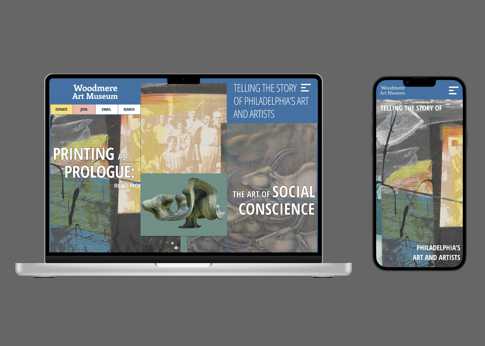
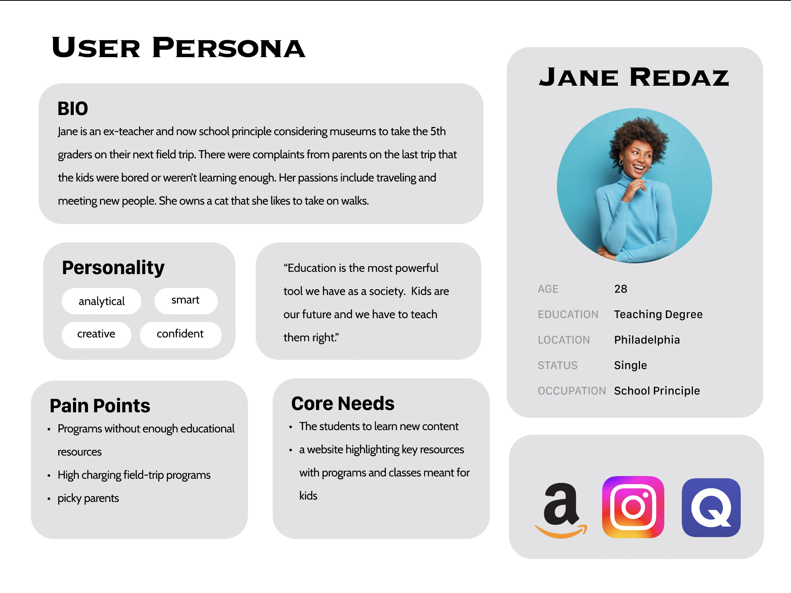
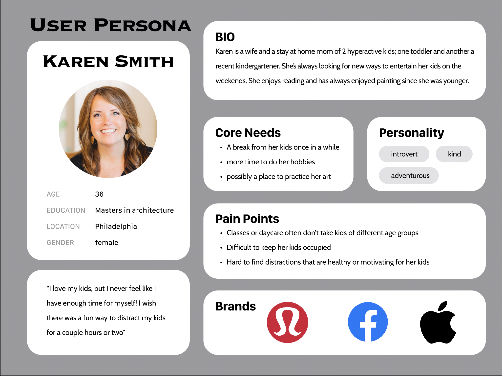

How can this local museum be more approachable for a general city demographic?
Drexel University IDM 211 &212
Interaction Design, Visual Design, Concept layout, User Testing
20 Weeks (September 2022 - March 2023)
Figma, AfterEffect, Illustrator
My first two quarters of Interactive Digital Media were spent on one continuous project of redesigning a website of choice on three different devices: Desktop, Tablet, and Mobile. This was my first ever UX or solo design project and it came as a heavy challenge when I was forced to push out of the box of creativity, but still work around many constraints. We were prompted to incorporate the addition of three features that the website lacks.
Woodmere Art Museum is a 20th-century museum filled with paintings, photographs, sculptures, and other forms of artwork. This family-friendly museum offers many activities for kids and adults welcoming demographics of all ages. Sitting in the heart of Philadelphia, the museum hopes of inspiring creativity, learning, and self expression through experiences of art regardless of age or background. The website poorly connects the user to the museum as it forces many inconveniences with its confusing task flow. It presents too many options and finding information is very difficult.
The museum has a diverse demographic as its informational and artistic entertainment can provide for many age ranges of different occupations.
My first user persona is Jane Redaz, an elementary school principl looking for fun and education opportunities for her students.
The second, is Karen Smith who is a mom of 2 kids. She is very artistic and looking for a creative outlet while also hoping for a place to entertain her hyperactive children in a healthy way.
My color palette was chosen relatively neutral for specific colors. I kept the main wood colors for the “board” the same and chose the others to be ones that could highlight the game. Instead of having the semi realistic design, I decided to go for a more animated and cartoonish style to simulate more as a game. The font and the icons also are chosen to represent a light and enjoyable aesthetic.
The The wireframe for the homepage was centered around putting up more events in an artistic way that doesn’t bore the user. The menu and the tabs are also designed for simplicity.
A lacking feature from the original website was the lack of accessibility visually and usability-wise to new content and events. This is vital to keeping new and old users coming back. I made that a prominent part of the homepage for my final design. Becoming a member or finding admission detail was ridiculously hard for a website that is centered around that exact goal. After finding the page, there were far too many unnecessary steps and I planned to fix that.
The overall website turned into a bit of a roadmap that leads the user from one event to another by following a line down the page. Instead of having so many tabs and subtabs that confuse and mislead the user, it is narrowed down and many similar subjects were pushed together. Because the museum was a art museum of all sorts, I wanted the website to really push that idea by creating it as an artform as well. I worked around a lot of squares and rectangular designs.